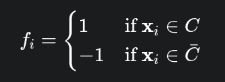

- Whats this?
- Principal Component Analysis (PCA)
- Spectral Clustering
- t-Distributed Stochastic Neighbor Embedding (t-SNE)
- Sources
Whats this?
It’s a document on PCA, Spectral Clustering and t-SNE, duh? All of these are used to make sense of the structure of data. More importantly, all of these are intricately related to eigendecomposition (Matrix Decompositions 1).
Why do I write this?
As always, I wanted to create an authoritative document I could refer to for later. Thought that I might as well make it public.
Principal Component Analysis (PCA)
What’s this used for? We use it to find a lower-dimensional linear subspace of a high-dimensional data space that captures the maximal amount of variance in the data.
Big dimensional data bad, lesser dimensions good:)
Perspectives
We can think about PCA from two viewpoints
- Maximizing the variance of projected data
- Minimizing reconstruction error
Huh? What’s variance? Covariance?
Let’s nail down expected value first.
The expected value of a random variable, which represents its theoretical mean or center of mass. For a continuous random variable X with probability density function (PDF) p(x), the expected value is:
\mathbb{E}[X] = \mu = \int_{-\infty}^{\infty} x p(x) dx
So, as you can probably gauge, this is like the mean – describes the central tendency of a distribution. But, it does not tell us anything about its spread / dispersion. This is where we get variance!
The variance of a random variable X, denoted \text{Var}(X) or \sigma^2, is the expected value of the squared deviation from its mean \mu.
\text{Var}(X) = \sigma^2 := \mathbb{E}[(X - \mu)^2]
The square root of the variance, \sigma, is the standard deviation, which is returned to the original units of the variable and is often more interpretable.
Takeaway – A low variance indicates that the values are tightly clustered around the mean, while a high variance indicates that they are spread out over a wider range.
Some math-y aspects of variance
The Raw-score Formula
The definition of variance can be expanded using the linearity of expectation.
\text{Var}(X) = \mathbb{E}[(X^2 - 2\mu X + \mu^2)] = \mathbb{E}[X^2] - 2\mu\mathbb{E}[X] + \mu^2 = \mathbb{E}[X^2] - 2\mu^2 + \mu^2
\text{Var}(X) = \mathbb{E}[X^2] - (\mathbb{E}[X])^2
This is more convenient for us. Why?
Empirally determining variance
In practice, we do not have the true distribution p(x) but a finite dataset of N observations {x_n}_{n=1}^N. We estimate the true variance using the empirical variance (or sample variance). First, the empirical mean is calculated:
\bar{x} = \frac{1}{N} \sum_{n=1}^N x_n
The empirical variance is the average of the squared deviations from this empirical mean:
\hat{\sigma}^2 = \frac{1}{N} \sum_{n=1}^N (x_n - \bar{x})^2
Important note – The unbiased estimator uses a denominator of N-1, but for large N and in many machine learning contexts, the version with N is used.
Huh? You ask again.
Why did you talk N-1 about above?
First – an unbiased estimator is a formula that, on average, gives us the correct value for the property that we are trying to measure from a population.
The population bit is important – this is the actual disribution. What are have are samples!
When you calculate the variance of a sample, you don’t know the true mean (\mu) of the entire population. Instead, you have to use the sample mean (\bar{x}).
The sample mean (\bar{x}) is calculated from your specific data points. By its nature, it’s the value that is closest to all the points in your sample, minimizing the sum of squared differences (x_n - \bar{x})^2 for that particular sample.
Since the sample mean is always a “perfect fit” for the sample, the deviations from it are slightly smaller than the deviations would be from the true population mean! So, we divide by N-1 to account for this – we call this Bessel’s Correction.
Using a smaller denominator makes the final result slightly larger. This small increase perfectly corrects for the underestimation caused by using the sample mean, ensuring that, on average, the calculated variance matches the true population variance. This is why it’s called the unbiased estimator. (What’s this? Keep reading until a few more sections. Or hit ctrl+F and find biased-estimator-def)
Ok, but, why N-1???
(Feel free to skip this bit if you don’t care about Math. But, then, that’s why you are here, isn’t it?)
First, let’s define our terms:
- \sigma^2 is the true variance of the population (what we want to estimate).
- \mu is the true mean of the population.
- \bar{x} = \frac{1}{N}\sum x_i is the sample mean.
- The sample variance estimator is s^2 = \frac{1}{N-1}\sum(x_i - \bar{x})^2.
- The expectation operator, E[\cdot], gives the long-run average of an estimator. For an estimator to be unbiased, its expectation must equal the true parameter, i.e., E[s^2] = \sigma^2.
Now, the derivation!
Our goal is to compute the expected value of the sum of squared differences, E\left[\sum(x_i - \bar{x})^2\right]. We start by rewriting the term inside the sum:
\sum(x_i - \bar{x})^2 = \sum(x_i - \mu - (\bar{x} - \mu))^2
Expanding the squared term gives:
= \sum\left[ (x_i - \mu)^2 - 2(x_i - \mu)(\bar{x} - \mu) + (\bar{x} - \mu)^2 \right]
Distributing the summation:
= \sum(x_i - \mu)^2 - 2(\bar{x} - \mu)\sum(x_i - \mu) + \sum(\bar{x} - \mu)^2
Now, let’s simplify the middle term, \sum(x_i - \mu), which equals N(\bar{x} - \mu). Substituting this in:
= \sum(x_i - \mu)^2 - 2(\bar{x} - \mu) \cdot N(\bar{x} - \mu) + N(\bar{x} - \mu)^2
= \sum(x_i - \mu)^2 - 2N(\bar{x} - \mu)^2 + N(\bar{x} - \mu)^2
= \sum(x_i - \mu)^2 - N(\bar{x} - \mu)^2
Now we take the expectation of this entire expression:
E\left[\sum(x_i - \bar{x})^2\right] = E\left[\sum(x_i - \mu)^2\right] - E\left[N(\bar{x} - \mu)^2\right]
By definition, E[(x_i - \mu)^2] is the population variance \sigma^2, and E[(\bar{x} - \mu)^2] is the variance of the sample mean, which is \sigma^2/N. Substituting these in:
E\left[\sum(x_i - \bar{x})^2\right] = \sum E[(x_i - \mu)^2] - N \cdot E[(\bar{x} - \mu)^2]
= N\sigma^2 - N\left(\frac{\sigma^2}{N}\right)
= N\sigma^2 - \sigma^2
= (N-1)\sigma^2
See? Now remember that you can user either N or N - 1 since for very, very large N, \mu = \bar{x}.
Covariance!
Variance describes how a single variable changes. Covariance extends this idea to describe how two variables change together.
The covariance between two random variables X and Y with means \mu_X and \mu_Y respectively, is the expected value of the product of their deviations from their means:
\text{Cov}(X, Y) := \mathbb{E}[(X - \mu_X)(Y - \mu_Y)]
Covariance Matrix!!
Multidimensional Data
For a D-dimensional random vector \mathbf{X} = [X_1, \dots, X_D]^\top with mean vector \boldsymbol{\mu} = \mathbb{E}[\mathbf{X}], the relationships between all pairs of its components are captured by the covariance matrix \mathbf{\Sigma} \in \mathbb{R}^{D \times D}.
\mathbf{\Sigma} := \mathbb{E}[(\mathbf{X} - \boldsymbol{\mu})(\mathbf{X} - \boldsymbol{\mu})^\top]
The entry at position (i, j) of this matrix is the covariance between the i-th and j-th components of the vector:
\Sigma_{ij} = \text{Cov}(X_i, X_j)
The diagonal elements are the variances of each component, \Sigma_{ii} = \text{Var}(X_i).
As always, properties!
1. Symmetry: \mathbf{\Sigma} = \mathbf{\Sigma}^\top, since \text{Cov}(X_i, X_j) = \text{Cov}(X_j, X_i).
2. Positive Semi-Definiteness: For any vector \mathbf{w} \in \mathbb{R}^D, \mathbf{w}^\top \mathbf{\Sigma} \mathbf{w} \ge 0. This is because \mathbf{w}^\top \mathbf{\Sigma} \mathbf{w} = \text{Var}(\mathbf{w}^\top \mathbf{X}), and variance is always non-negative! (since it’s a square, duh)
Empirical Covariance Matrix
As always, we only have a sample; not the distribution / population.
So, what do we do? N or N-1?
I will first define population and samples since I’ve just been naming them
- Population: The entire set of all possible observations of interest. Population parameters, such as the true mean \mu and the true covariance \mathbf{\Sigma}, are considered fixed but unknown constants.
- Sample: A finite subset of observations $latex {\mathbf{x}n}{n=1}^N$ drawn from the population. We use the sample to make inferences about the unknown population parameters.
With me so far? Good, now more definitions.
An estimator is a function of the sample data that is used to estimate an unknown population parameter. For example, the sample mean \bar{\mathbf{x}} is an estimator for the population mean \boldsymbol{\mu}. A crucial property of an estimator is its bias.
Definition (Bias of an Estimator): Let \theta be an unknown population parameter and let \hat{\theta} be an estimator of \theta based on a sample. The bias of the estimator is defined as the difference between the expected value of the estimator and the true value of the parameter:
\text{Bias}(\hat{\theta}) = \mathbb{E}[\hat{\theta}] - \theta
- An estimator is unbiased if its bias is zero, i.e., \mathbb{E}[\hat{\theta}] = \theta. This means that if we were to repeatedly draw samples of size N from the population and compute the estimate \hat{\theta} for each, the average of these estimates would converge to the true parameter \theta.
- An estimator is biased if \mathbb{E}[\hat{\theta}] \neq \theta.
(See? I told you a few more sections earlier; keyword: biased-estimator-def)
Cool, I just want to remind you of Bessel’s Correction once again:
\mathbb{E}[\hat{\sigma}^2_{N-1}] = \mathbb{E}\left[\frac{N}{N-1}\hat{\sigma}^2_N\right] = \frac{N}{N-1}\mathbb{E}[\hat{\sigma}^2_N] = \frac{N}{N-1} \left( \frac{N-1}{N}\sigma^2 \right) = \sigma^2
and also the why once again – The bias arises because we are measuring deviations from the sample mean \bar{x}, which is itself derived from the data.
The data points are, on average, closer to their own sample mean than to the true population mean, leading to an underestimation of the true spread.
First, the MLE!
Maximum Likelihood Estimation is a fundamental method for deriving estimators. Given a dataset \mathcal{X} = {x_n}_{n=1}^N and a parameterized probability model p(\mathbf{x} | \boldsymbol{\theta}), the likelihood function is the probability of observing the data, viewed as a function of the parameters \boldsymbol{\theta}:
L(\boldsymbol{\theta}; \mathcal{X}) = p(\mathcal{X} | \boldsymbol{\theta})
The MLE principle states that we should choose the parameters \hat{\boldsymbol{\theta}}_{\text{ML}} that maximize this likelihood function. For an i.i.d. sample, this is equivalent to maximizing the log-likelihood:
\hat{\boldsymbol{\theta}}_{\text{ML}} = \arg\max _{\boldsymbol{\theta}} \sum_{n=1}^N \log p(\mathbf{x}_n | \boldsymbol{\theta})
How did we get the above? Take log on both sides of
L(\boldsymbol{\theta}; \mathcal{X}) = p(\mathcal{X} | \boldsymbol{\theta}) = \prod_{n=1}^N p(\mathbf{x}_n | \boldsymbol{\theta})
Ok what the hell is this? Probability theory solves the “forward problem”: Given a model with known parameters, what does the data look like? (e.g., “If this coin is fair, \theta=0.5, I expect to see roughly 5 heads in 10 flips.”)
(Statistical inference in general, and) MLE in particular, solves the inverse problem: Given the data we have observed, what were the most likely parameters of the model that generated it? (e.g., “I flipped a coin 10 times and got 8 heads. What is the most plausible value for this coin’s bias, $\theta$?”)
- Normally, we think of p(\mathcal{X} | \boldsymbol{\theta}) as a probability distribution over possible datasets \mathcal{X}, for a fixed parameter setting \boldsymbol{\theta}.
- The likelihood function, L(\boldsymbol{\theta}; \mathcal{X}), treats the observed data \mathcal{X} as fixed and views this quantity as a function of the parameters \boldsymbol{\theta}.
Here, I present a statement:
The covariance estimator with denominator N is the MLE under a Gaussian assumption
Ponder this. What can it even mean? Yeah, it’s just that \mathcal{X} is taken as a gaussian.
Specifically, we assume our data points {\mathbf{x}_n} are drawn i.i.d. from a multivariate Gaussian distribution, \mathcal{N}(\boldsymbol{\mu}, \mathbf{\Sigma}). The parameters to be estimated are \boldsymbol{\theta} = {\boldsymbol{\mu}, \mathbf{\Sigma}}.
That means that the log-likelihood function for this model and a dataset \mathcal{X} is:
\log L(\boldsymbol{\mu}, \mathbf{\Sigma}; \mathcal{X}) = \sum_{n=1}^N \log \left( \frac{1}{(2\pi)^{D/2}|\mathbf{\Sigma}|^{1/2}} \exp\left(-\frac{1}{2}(\mathbf{x}_n-\boldsymbol{\mu})^\top\mathbf{\Sigma}^{-1}(\mathbf{x}_n-\boldsymbol{\mu})\right) \right)
Do math, take partial derivatives, yada yada and we get:
- \hat{\boldsymbol{\mu}}_{\text{ML}} = \frac{1}{N}\sum\mathbf{x}_n = \bar{\mathbf{x}} (the sample mean)
- \hat{\mathbf{\Sigma}}_{\text{ML}} = \frac{1}{N}\sum(\mathbf{x}_n - \bar{\mathbf{x}})(\mathbf{x}_n - \bar{\mathbf{x}})^\top
Takeaway – The MLE (estimator / estimation – same thing) is the estimator that makes the observed data “most probable” under a Gaussian model.
Now, this estimator is biased!
Changing notation a bit (I started this on another day and am lazy to keep track, haha).
Here’s what’s up rn:
The estimator for the covariance matrix using denominator N is the MLE:
\mathbf{S}_{N} = \frac{1}{N} \sum_{n=1}^N (\mathbf{x}_n - \bar{\mathbf{x}})(\mathbf{x}_n - \bar{\mathbf{x}})^\top
Its expected value is: (tiny recap time!)
\mathbb{E}[\mathbf{S}_N] = \frac{N-1}{N}\mathbf{\Sigma}
This estimator is biased. The unbiased sample covariance matrix is:
\mathbf{S}_{N-1} = \frac{1}{N-1} \sum_{n=1}^N (\mathbf{x}_n - \bar{\mathbf{x}})(\mathbf{x}_n - \bar{\mathbf{x}})^\top
Its expected value is \mathbb{E}[\mathbf{S}_{N-1}] = \mathbf{\Sigma}.
Now, which one do we use?
Use MLE for ML, unbiased for statistics.
- Statistics: Unbiasedness is a highly desirable property. An unbiased estimator is correct on average.
- The unbiased estimator \mathbf{S}_{N-1} is the standard. In statistical analysis (e.g., hypothesis testing, confidence intervals), using an unbiased estimate of variance is critical for the validity of the statistical procedures. The focus is on estimation accuracy.
- Machine Learning: Minimizing prediction error is a desired property. MLE is better for such cases.
- The quality of an estimator is often judged by its Mean Squared Error (MSE)
- \text{MSE}(\hat{\theta}) = \mathbb{E}[(\hat{\theta} - \theta)^2] = (\text{Bias}(\hat{\theta}))^2 + \text{Var}(\hat{\theta})
- This is the bias-variance tradeoff. The best estimator is one that minimizes this total error.
- The MLE estimator \mathbf{S}_{N} has a slightly lower variance than the unbiased estimator \mathbf{S}_{N-1} (what, you want the proof? we did this earlier, dummy). It can be shown that \text{MSE}(\mathbf{S}_{N}) < \text{MSE}(\mathbf{S}_{N-1}). Therefore, if the goal is to find an estimator that is “closer” to the true value on average in terms of squared error, the biased MLE is superior.
Back to PCA
We take the empirical covariance matrix to be
\mathbf{S} = \frac{1}{N} \sum_{n=1}^N \mathbf{x}_n \mathbf{x}_n^\top = \frac{1}{N}\mathbf{X}^\top\mathbf{X}
where \mathbf{X} \in \mathbb{R}^{N \times D} is the data matrix with observations as rows. This is when we are dealing with a centered dataset, i.e., the sample mean, \frac{1}{N}\sum_n \mathbf{x}_n = \mathbf{0}.
Notice that the covariance matrix, \mathbf{S} \in \mathbb{R}^{D \times D}; it is reflects the dimenions, NOT the samples.
Important Note: Ok, cool, N for ML (explained above). But, does it matter here? NO. We use eigenvectors and these are the same for both \mathbf{S}_{N-1} and \mathbf{S}_{N} since these are only scaled versions of each other.
(Perspective 1) As maximising variance
Remember: We have centered the dataset!
Now, we are trying to find a lower dimension space. So, we reduce the number of dimensions (duh), but what this means is that we should be able to reflect {x_n} \in \mathbb{R}^D in less than D coordinate vectors.
So, we try to find a set of coordinate vectors \in \mathbb{R}^D such that the number of these coordinate vectors is less than D. Thus, now, the new set of coordinate vectors will no longer span the entire real space, i.e., \mathbb{R}^D.
Now, let us find the direction, represented by a unit vector \mathbf{b}_1 \in \mathbb{R}^D, onto which the projected data has the greatest variance.
The projection of a data point \mathbf{x}_n onto the direction \mathbf{b}_1 results in a scalar coordinate z_{1n} = \mathbf{b}_1^\top \mathbf{x}_n. The variance of these projected coordinates over the entire dataset is:
V_{1} = \frac{1}{N}\sum_{n=1}^{N} z_{1n}^{2}
= \frac{1}{N}\sum_{n=1}^{N} (\mathbf{b}_{1}^\top \mathbf{x}_{n})^{2}
= \frac{1}{N}\sum_{n=1}^{N} \mathbf{b}_{1}^\top \mathbf{x}_{n} \mathbf{x}_{n}^\top \mathbf{b}_{1}
= \mathbf{b}_{1}^\top \left(\frac{1}{N}\sum_{n=1}^{N} \mathbf{x}_{n} \mathbf{x}_{n}^\top\right) \mathbf{b}_{1}
= \mathbf{b}_{1}^\top \mathbf{S} \mathbf{b}_{1}
What we want to do is maximize this variance subject to the constraint that \mathbf{b}_1 is a unit vector, i.e., |\mathbf{b}_1|^2 = \mathbf{b}_1^\top \mathbf{b}_1 = 1. This is a constrained optimization problem:
\max_{\mathbf{b}_1} \mathbf{b}_1^\top \mathbf{S} \mathbf{b}_1 \quad \text{subject to} \quad \mathbf{b}_1^\top \mathbf{b}_1 = 1
We form the Lagrangian:
\mathcal{L}(\mathbf{b}_1, \lambda_1) = \mathbf{b}_1^\top \mathbf{S} \mathbf{b}_1 - \lambda_1(\mathbf{b}_1^\top \mathbf{b}_1 - 1)
Setting the gradient with respect to \mathbf{b}_1 to zero yields:
\nabla_{\mathbf{b}_1} \mathcal{L} = 2\mathbf{S}\mathbf{b}_1 - 2\lambda_1\mathbf{b}_1 = \mathbf{0} \implies \mathbf{S}\mathbf{b}_1 = \lambda_1\mathbf{b}_1
This is the eigenvalue equation for the covariance matrix \mathbf{S}. To maximize the variance V_1 = \mathbf{b}_1^\top \mathbf{S} \mathbf{b}_1 = \mathbf{b}_1^\top (\lambda_1 \mathbf{b}_1) = \lambda_1, we must choose \lambda_1 to be the largest eigenvalue of \mathbf{S}. The corresponding vector \mathbf{b}_1 is the first principal component.
Subsequent principal components \mathbf{b}_2, \dots, \mathbf{b}_M are found by finding the eigenvectors of \mathbf{S} corresponding to the next largest eigenvalues, ensuring they are orthogonal to the preceding components.
Notice how it is also very neat that the variance is then just the sum of the chosen eigen values:)
(Perspective 2) As minimizing reconstruction error
No one really talks about this one much but let’s see. I will be very math-y here.
- Let the principal subspace be an M-dimensional subspace spanned by an orthonormal basis of vectors {\mathbf{b}_{m}}_{m=1}^M
- \mathbf{B} = [\mathbf{b}_1, \dots, \mathbf{b}_M] \in \mathbb{R}^{D \times M}.
- The orthogonal projection of a data point \mathbf{x}_n onto this subspace is \tilde{\mathbf{x}}_n = \mathbf{B}\mathbf{B}^\top \mathbf{x}_n.
- Our goal is to find the basis \mathbf{B} that minimizes the average squared reconstruction error:
J_M = \frac{1}{N} \sum_{n=1}^N |\mathbf{x}_n - \tilde{\mathbf{x}}_n|^2
By the properties of orthogonal projections, the total variance can be decomposed: \sum_n |\mathbf{x}_n|^2 = \sum_n |\tilde{\mathbf{x}}_n|^2 + \sum_n |\mathbf{x}_n - \tilde{\mathbf{x}}_n|^2. Since the total variance \sum_n |\mathbf{x}_n|^2 is fixed, minimizing the reconstruction error is equivalent to maximizing the projected variance \sum_n |\tilde{\mathbf{x}}_n|^2.
So, yes, we have very smartly reduced the 2nd perspective to the first perspective. Yay!
Probabilistic PCA (PPCA)
Classical PCA is a geometric, algorithmic procedure. Probabilistic PCA (PPCA) reformulates this procedure within a probabilistic framework by defining a latent variable model that describes the generative process of the data.
What? Ok, fine, I’ll explain.
PCA is a point estimate – gives you a single, definitive answer for the principal components and the lower-dimensional space they define, without expressing any uncertainty about that result. It is fundamentally a descriptive tool, not a generative one. This means:
- It cannot generate new data points
- It does not provide a likelihood of the data, making principled model selection (e.g., choosing the optimal number of components M) difficult!
- It cannot handle missing values in the data.
So, we now have PPCA! PPCA posits that the high-dimensional observed data \mathbf{x} \in \mathbb{R}^D is a manifestation of some simpler, unobserved (latent) cause \mathbf{z} \in \mathbb{R}^M, where M < D.
PPCA models the relationship between the latent and the observed (this is such a smart sounding statement, omg).
Definitions
(No, what did you expect?)
Latent Variable Prior: A simple cause is assumed for each data point. This is modeled by a prior distribution over the latent variable \mathbf{z}. PPCA assumes a standard multivariate Gaussian prior:
p(\mathbf{z}) = \mathcal{N}(\mathbf{z} | \mathbf{0}, \mathbf{I})
This asserts that the latent variables are, a priori, independent and centered at the origin of the latent space.
Conditional Distribution of Data (Likelihood): The observed data point \mathbf{x} is generated from its corresponding latent variable \mathbf{z} via a linear transformation, with added noise. This is defined by the conditional probability p(\mathbf{x}|\mathbf{z}):
p(\mathbf{x} | \mathbf{z}) = \mathcal{N}(\mathbf{x} | \mathbf{B}\mathbf{z} + \boldsymbol{\mu}, \sigma^2\mathbf{I})
This is equivalent to the equation \mathbf{x}_n = \mathbf{B}\mathbf{z}_n + \boldsymbol{\mu} + \boldsymbol{\epsilon}_n, where:
- \mathbf{B} \in \mathbb{R}^{D \times M} is a matrix that maps the latent space to the data space. Its columns can be interpreted as the basis vectors of the principal subspace.
- The principal subspace is the lower-dimensional plane or hyperplane that captures the most important variations in your data. Basis vectors are the fundamental directions that define or “span” that subspace.
- This just means that the reconstructed data point is made by a linear combination of the basis vectors of the principal subspace (plus the following things).
- \boldsymbol{\mu} \in \mathbb{R}^D is the mean of the data.
- Yeah I don’t think I can explain this more.
- \boldsymbol{\epsilon}_n \sim \mathcal{N}(\mathbf{0}, \sigma^2\mathbf{I}) is isotropic Gaussian noise, which accounts for the variability of data off the principal subspace.
- isotropic = fluctuations are same in all directions; hence the scalar multiplied with the identity matrix for variance.
- Also, every dimension is independent and uncorrrelated.
Calculation time!
To define the likelihood of the model, we must integrate out the latent variables to find the marginal distribution of the observed data, p(\mathbf{x}):
p(\mathbf{x}) = \int p(\mathbf{x} | \mathbf{z}) p(\mathbf{z}) d\mathbf{z}
Since both p(\mathbf{x}|\mathbf{z}) and p(\mathbf{z}) are Gaussian, and the relationship is linear, this integral can be solved analytically. The resulting marginal distribution is also a Gaussian, p(\mathbf{x}) = \mathcal{N}(\mathbf{x} | \boldsymbol{\mu}, \mathbf{C}), with mean and covariance:
- Mean: \mathbb{E}[\mathbf{x}] = \mathbb{E}[\mathbf{B}\mathbf{z} + \boldsymbol{\mu} + \boldsymbol{\epsilon}] = \mathbf{B}\mathbb{E}[\mathbf{z}] + \boldsymbol{\mu} + \mathbb{E}[\boldsymbol{\epsilon}] = \boldsymbol{\mu}.
- Covariance: \text{Cov}(\mathbf{x}) = \text{Cov}(\mathbf{B}\mathbf{z} + \boldsymbol{\epsilon}) = \mathbf{B}\text{Cov}(\mathbf{z})\mathbf{B}^\top + \text{Cov}(\boldsymbol{\epsilon}) = \mathbf{B}\mathbf{I}\mathbf{B}^\top + \sigma^2\mathbf{I} = \mathbf{B}\mathbf{B}^\top + \sigma^2\mathbf{I}.
The parameters of the model (\mathbf{B}, \boldsymbol{\mu}, \sigma^2) are found by maximizing the log-likelihood of the observed data under this marginal distribution. How to do this? I dunno and I can’t write that much latex. Go read a book for this please (note to self – code is available thankfully).
Advantanges
- Handling Missing Data: The generative nature of PPCA allows it to handle missing data through the Expectation-Maximization (EM) algorithm.
- How? Again, I think I’ll write more on EM later. But, for now, let’s take it as is.
- Model Selection: The probabilistic formulation provides a log-likelihood value for the dataset given a model.
- This allows for principled model selection, for instance, choosing the optimal number of principal components $M$ by comparing the likelihood values (often using criteria like AIC or BIC) for different choices of $M$.
- PPCA is used in robotics for sensor fusion and state estimation where sensor noise is a critical factor. How? Idk – I took this statement as is. Takeaway – super useful.
Kernel PCA
This addresses the primary limitation of standard PCA – PCA seeks a linear subspace to represent the data. If the data lies on a complex, non-linear manifold (e.g., a spiral, a “Swiss roll”), any linear projection will fail to capture the underlying structure, leading to a poor low-dimensional representation.
How? Map the data from the original input space \mathbb{R}^D to a higher (often infinite) dimensional feature space \mathcal{F} via a non-linear mapping \phi: \mathbb{R}^D \to \mathcal{F}. The mapping \phi is chosen such that the structure of the mapped data \phi(\mathbf{x}) becomes linear in \mathcal{F}. Standard linear PCA is then performed on the data in this feature space.
But, we get a computational barrier:
- The dimensionality of \mathcal{F} can be enormous or infinite.
- The function \phi itself may not even be known explicitly.
So, we use the kernel trick!
Let’s perform PCA on the mapped data $latex {\phi(\mathbf{x}n)}{n=1}^N$. The covariance matrix in the feature space \mathcal{F} is:
\mathbf{S}_\phi = \frac{1}{N} \sum_{n=1}^N \phi(\mathbf{x}_n) \phi(\mathbf{x}_n)^\top
The eigenvalue problem in \mathcal{F} is \mathbf{S}_\phi \mathbf{v} = \lambda \mathbf{v}, where \mathbf{v} \in \mathcal{F} are the principal components in the feature space.
Want to go on? Follow this lecture pdf from slide 32; I really can’t write it better for myself either. The only extra thing that I can offer is to answer the question: Why can eigenvectors be written as linear combiunation of features?
The eigenvectors vⱼ can be written as a linear combination of the features because they must lie in the space spanned by the feature vectors φ(xᵢ) themselves.
Let’s start with the PCA equation:
\frac{1}{m} \sum_{i=1}^m \phi(\mathbf{x}_i)\phi(\mathbf{x}_i)^T \mathbf{v}_j = \lambda_j \mathbf{v}_j
We can isolate the eigenvector vⱼ by rearranging the equation (assuming the eigenvalue λⱼ is not zero):
\mathbf{v}_j = \frac{1}{m\lambda_j} \sum_{i=1}^m \phi(\mathbf{x}_i)\phi(\mathbf{x}_i)^T \mathbf{v}_j
Now, let’s group the terms differently:
\mathbf{v}_j = \sum_{i=1}^m \left( \frac{\phi(\mathbf{x}_i)^T \mathbf{v}_j}{m\lambda_j} \right) \phi(\mathbf{x}_i)
Notice that the term in the parenthesis, \frac{\phi(\mathbf{x}_i)^T \mathbf{v}_j}{m\lambda_j}, is just a scalar (a single number) because it’s a dot product divided by constants.
If we call this scalar coefficient a_{ji}, we get the exact relationship shown on the slide:
\mathbf{v}_j = \sum_{i=1}^m a_{ji} \phi(\mathbf{x}_i)
This proves that any eigenvector vⱼ is simply a weighted sum of all the feature vectors φ(xᵢ).
Spectral Clustering
This is a graph-based clustering technique that partitions data by analyzing the spectrum (eigenvalues) of a graph’s Laplacian matrix.
Foundations
What? Ok, some definitions :sparkles: (I hope you can relate to some things if you took data structures and algorithms)
Similarity Graph
Given a dataset of N points {\mathbf{x}_1, \dots, \mathbf{x}_N}, we construct a graph G = (V, E), where the set of vertices V corresponds to the data points. The set of edges E represents the similarity or affinity between pairs of points. This similarity is quantified by a weighted adjacency matrix \mathbf{A} \in \mathbb{R}^{N \times N}, where A_{ij} \ge 0 is the similarity between points \mathbf{x}_i and \mathbf{x}_j. High values indicate high similarity.
- Common ways to construct \mathbf{A} include the k-nearest neighbor graph or using a Gaussian kernel: A_{ij} = \exp(-|\mathbf{x}_i - \mathbf{x}_j|^2 / 2\sigma^2).
Graph Partitioning
The goal of clustering is to partition the vertices V into disjoint sets (clusters) C_1, C_2, \dots, C_k. An ideal partition is one where the edges within a cluster have high weights (high intra-cluster similarity) and the edges between clusters have low weights (low inter-cluster similarity). This is known as finding a minimal graph cut.
- This is our objective btw in case it wasn’t clear.
Graph Laplacian
Ok, this isn’t much of a definition. I’ll try to explain it since it’s the core component / concept.
It is the fundamental object whose spectrum (eigenvalues and eigenvectors) reveals the cluster structure of the graph.
First, let’s define the degree matrix. A diagonal matrix where each diagonal element D_{ii} is the sum of weights of all edges connected to vertex i:
D_{ii} = \sum_{j=1}^N A_{ij}
The unnormalized graph laplacian is:
\mathbf{L} := \mathbf{D} - \mathbf{A}
Some properties of the Graph Laplacian:
- It is symmetric and positive semi-definite.
- It is symmetric since it’s the combination of the adjacency matrix and the degree matrix (a diagonal matrix) are symmetric.
- We later show that x^{T}Lx turns into a square term, so it is positive semi-definite (or semi positive definite). Or, ctrl + F and find quadratic-laplacian-square.
- The Spectral Theorem states that any real, symmetric matrix has real eigenvalues and orthogonal eigenvectors.
- The added property of being positive semi-definite ensures these real eigenvalues are also non-negative (λ≥0).
- This is crucial because it allows us to reliably sort the eigenvalues from smallest to largest.
- The smallest eigenvalue of \mathbf{L} is always \lambda_1 = 0, with the corresponding eigenvector being the vector of all ones, \mathbf{u}_1 = \mathbf{1}.
- This is because the sum of each row in the Laplacian matrix is always zero by construction (D_{ii} - \sum_j A_{ij} = 0).
Graph cut and Laplacian
Ok, simplest case first – we have two partitions, i.e., two disjoint sets, C and its complement \bar{C}.
The “cut” is the sum of weights of all edges connecting these two sets:
\text{cut}(C, \bar{C}) = \sum_{i \in C, j \in \bar{C}} A_{ij}
Repeating for dramatic effect – minimizing this cut directly is an NP-hard combinatorial problem.
We (I) define a partition indicator vector \mathbf{f} \in \mathbb{R}^N where:

Yeah, I didn’t want to write latex.
Now, consider the quadratic form of the Laplacian, \mathbf{f}^\top \mathbf{L} \mathbf{f}.
\mathbf{f}^\top \mathbf{L} \mathbf{f} = \mathbf{f}^\top (\mathbf{D} - \mathbf{A}) \mathbf{f}
= \sum_{i} D_{ii}f_{i}^2 - \sum_{i,j} A_{ij}f_{i} f_{j}
= \sum_{i} \left(\sum_{j} A_{ij}\right) f_{i}^2 - \sum_{i,j} A_{ij}f_{i} f_{j}
= \frac{1}{2} \left( \sum_{i} \sum_{j} A_{ij}f_{i}^2 - 2\sum_{i,j} A_{ij}f_{i} f_{j} + \sum_{j} \sum_{i} A_{ji}f_{j}^2 \right)
= \frac{1}{2} \sum_{i,j} A_{ij}(f_{i}^2 - 2f_{i} f_{j} + f_{j}^2)
= \frac{1}{2} \sum_{i,j} A_{ij}(f_{i} - f_{j})^2
See? I promised you a square earlier! (keyword – quadratic-laplacian-square)
Now, observe the term (f_i - f_j)^2:
- If f_i = f_j (i.e., both nodes are in the same partition), (f_i - f_j)^2 = 0.
- If f_i \neq f_j (i.e., nodes are in different partitions), (f_i - f_j)^2 = (1 - (-1))^2 = 4.
So / Therefore / Thus / Hence, minimizing the graph cut is equivalent to minimizing \mathbf{f}^\top \mathbf{L} \mathbf{f}.
How does this help us?
The optimization problem \min_{\mathbf{f}} \mathbf{f}^\top \mathbf{L} \mathbf{f} with the constraint that f_i \in {1, -1} is still combinatorial.
So, what we do is – we relax. With multiple xs. The entries of \mathbf{f} can take any real values now. So, we get
\min_{\mathbf{f} \in \mathbb{R}^N} \mathbf{f}^\top \mathbf{L} \mathbf{f} \quad \text{subject to} \quad \mathbf{f}^\top \mathbf{f} = 1 \quad (\text{or some other normalization})
This is the formulation for minimizing the Rayleigh quotient. Its solution? Notice how its the same optimization problem we had in PCA?
The solution is given by the eigenvector of \mathbf{L} corresponding to the smallest eigenvalue.
However, the smallest eigenvalue is \lambda_1=0 with eigenvector \mathbf{u}_1 = \mathbf{1}. This is a trivial solution where all entries of \mathbf{f} are constant, which does not define a partition.
So, the non-trivial solution must be orthogonal to this vector of ones.
\min \mathbf{f}^\top \mathbf{L} \mathbf{f} subject to \mathbf{f}^\top \mathbf{f} = 1 and \mathbf{f}^\top \mathbf{1} = 0
This is the eigenvector corresponding to the second-smallest eigenvalue of \mathbf{L}.
- This eigenvector is known as the Fiedler vector.
Generalized
(I’m just going to get an LLM to generate it)
- Construct Similarity Graph: Given N data points, construct the adjacency matrix \mathbf{A}.
- Compute Laplacian: Compute the degree matrix \mathbf{D} and the Laplacian \mathbf{L} = \mathbf{D} - \mathbf{A}.
- Compute Eigenvectors: Find the first k eigenvectors \mathbf{u}_1, \dots, \mathbf{u}_k of \mathbf{L} corresponding to the k smallest eigenvalues.
- Form Embedding: Construct a matrix \mathbf{U} \in \mathbb{R}^{N \times k} with these eigenvectors as its columns.
- Cluster Embedding: Treat each row of \mathbf{U} as a new data point in a k-dimensional space. Cluster these N new points into k clusters using a simple algorithm like k-means.
- Assign Original Points: The cluster assignment of the i-th row of \mathbf{U} is the final cluster assignment for the original data point \mathbf{x}_i.
t-Distributed Stochastic Neighbor Embedding (t-SNE)
Why not just PCA?
Remember kernel PCA? The one that solves the problem of PCA being linear? Yeah, t-SNE solves the same thing.
Prerequisites
Gaussians
The bell curve, duh. I am not explaining this further. Here’s the formula:
p(x | \mu, \sigma^2) = \frac{1}{\sqrt{2\pi\sigma^2}} \exp\left(-\frac{(x - \mu)^2}{2\sigma^2}\right)
The important thing to know here is that Gaussians have light tails.
- Values away from the mean are exceptionally unlikely.
t-distribution
These have heavier tails than Gaussians – defined by degrees of freedom (\nu=1).
- The PDF of the t-distribution decays polynomially, not exponentially.
- As \nu \to \infty, the t-distribution converges to the Gaussian distribution.
- The specific case used in t-SNE is the t-distribution with one degree of freedom (\nu=1), also known as the Cauchy distribution. Its simplified PDF has the form:
p(y) \propto \frac{1}{1+y^2}
Now, before moving on, I want to add a bit more context – the teacher is the gaussian and the student is the t-distribution (the lower dimension one).
This is a crucial design choice to solve the “crowding problem”. In a 2D map, there isn’t enough space to accurately represent all the neighborhood distances from a high-D space. The heavy tails of the t-distribution mean that two points can be placed far apart in the map and still have a non-trivial similarity score. This allows t-SNE to place moderately dissimilar points far apart, effectively creating more space for the local neighborhoods to be modeled without being “crowded” together.
Kullback-Leibler (KL) Divergence
It is a measure of how one probability distribution, Q, is different from a second, reference probability distribution, P. It is not a true distance metric (it is not symmetric), but it is often used to measure the “distance” or “divergence” between distributions.
For discrete distributions over outcomes i:
D_{KL}(P || Q) = \sum_i P(i) \log \frac{P(i)}{Q(i)}
Again, context – this is our cost function in t-SNE.
Oh? You want more on it? I want to cover both KL divergence and Gaussians more. But, for now, I think I can suggest Wikipedia.
Math
Three stages:
Stage 1: Modeling High-Dimensional Similarities
The similarity between two data points, \mathbf{x}_i and \mathbf{x}_j, is converted into a conditional probability, p_{j|i}. This is interpreted as the probability that \mathbf{x}_i would choose \mathbf{x}_j as its neighbor if neighbors were picked in proportion to their probability density under a Gaussian distribution centered at \mathbf{x}_i.
p_{j|i} = \frac{\exp(-|\mathbf{x}_i - \mathbf{x}_j|^2 / 2\sigma_i^2)}{\sum_{k \neq i} \exp(-|\mathbf{x}_i - \mathbf{x}_k|^2 / 2\sigma_i^2)}
So, sorta like “j given i” but not exactly.
Ok, what is \sigma_i^2? Variance of the local Gaussian. Yes, but how do we get this? We use something called Perplexity
Perplexity
(adding this as well – notice how it dictates the size of the neighbourhood in a way)
Yeah, you see how? (I just added the last sentence within brackets for fun)
Now, notice how the scale parameter \sigma_i must be locally adaptive. Each data point \mathbf{x}_i needs its own unique bandwidth \sigma_i that is appropriate for its local neighborhood density.
Before everything else, focus on the following definition.
For each data point \mathbf{x}_i, we have a conditional probability distribution P_i over all other points, where P_i = \{p_{j|i}\}_{j \neq i}. The Shannon entropy of this distribution, measured in bits, is:
H(P_i) = - \sum_{j \neq i} p_{j|i} \log_2 p_{j|i}
The entropy H(P_i) quantifies the uncertainty involved in choosing a neighbor for point \mathbf{x}_i according to the distribution P_i.
- If the distribution is sharply peaked on one neighbor (low uncertainty), the entropy will be low.
- If the distribution is spread out over many neighbors (high uncertainty), the entropy will be high.
The perplexity of the distribution P_i is defined as the exponential of its Shannon entropy:
\text{Perp}(P_i) = 2^{H(P_i)}
(If you’ve done NLP, this would seem very familiar. That’s because it is.)
What does this do? Notice that if the probability distribution $P_i$ is uniform over $k$ neighbors (and zero for all others), its perplexity will be exactly $k$.
Perplexity can be interpreted as a smooth, continuous measure of the effective number of neighbors for point \mathbf{x}_i.
Ok, now, we don’t know H(P_i) – wouldn’t we need the variances to calculate it?
Yes. So, here’s what we do:
- User Input: The user specifies a single, global perplexity value. This value is the same for all points and typically ranges from 5 to 50. Let’s say the user chooses a perplexity of 30.
- Per-Point Optimization: For each data point \mathbf{x}_i, the t-SNE algorithm performs an independent optimization. It searches for the specific value of the Gaussian variance, \sigma_i^2, that produces a conditional probability distribution P_i whose perplexity is exactly equal to the user’s desired value (in this case, 30).
- The Search Algorithm: This search is performed efficiently using binary search. The algorithm makes a guess for \sigma_i, computes the resulting perplexity, and then adjusts \sigma_i up or down until the target perplexity is met within a given tolerance.
Neat, isn’t it?
Last thing in this stage – Symmetrization.
The conditional probabilities p_{j|i} are not symmetric. To create a single joint probability distribution P over all pairs of points, they are symmetrized:
p_{ij} = \frac{p_{j|i} + p_{i|j}}{2N}
where N is the number of data points. This P represents the target similarity structure that we wish to preserve.
Stage 2: Modeling Low-Dimensional Similarities (Q)
Now, we define a similar probability distribution Q for the points in the low-dimensional embedding space, {\mathbf{y}_1, \dots, \mathbf{y}_N}.
Remember how I told you about the crowding problem? No? Go back.
The t-distribution is heavy-tailed, meaning it decays much more slowly with distance than a Gaussian.
q_{ij} = \frac{(1 + |\mathbf{y}_i - \mathbf{y}_j|^2)^{-1}}{\sum_{k \neq l} (1 + |\mathbf{y}_k - \mathbf{y}_l|^2)^{-1}}
This is the student’s t-distribution with one degree of freedom.
Stage 3: Optimization via KL Divergence Minimization
We minimize the KL divergence:
C = \text{KL}(P||Q) = \sum_{i<j} p_{ij} \log \frac{p_{ij}}{q_{ij}}
If you are a dum-dum like me – i < j gives half of what i \neq j does.
This is non-convex: has multiple minimas. So, we use iterative gradient descent and hope for the best.
\frac{\partial C}{\partial \mathbf{y}_i} = 4 \sum_{j} (p_{ij} - q_{ij})(1 + |\mathbf{y}_i - \mathbf{y}_j|^2)^{-1}(\mathbf{y}_i - \mathbf{y}_j)
(This makes t-SNE non-deterministic!)
Why not just kernel PCA?
Kernel PCA: finds an optimal linear projection in a non-linearly transformed space.
- Non-linear feature extraction and dimensionality reduction. It seeks to find a set of non-linear components that can be used for subsequent tasks (e.g., classification, regression).
t-SNE: finds a a faithful representation of the local data topology.
- Visualization and exploratory data analysis. It seeks to create a 2D or 3D map of the data that reveals its underlying local structure and clustering.
Now, a very, very important point is that
Kernel PCA deals with global structure, t-SNE with local.
You use kernel PCA when you need non-linear feature extraction for a subsequent machine learning task.
You use t-SNE for visualizing / exploring a high-dimensional feature space.
Key takeaway: Do NOT use t-SNE for feature extraction.